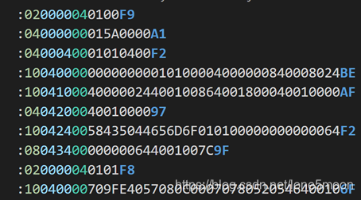
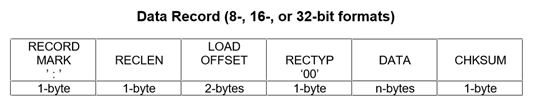
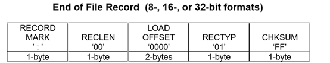
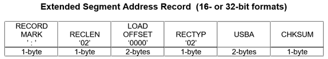
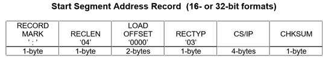
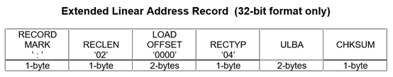
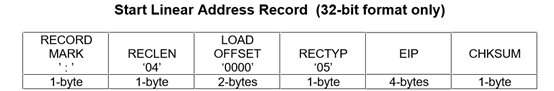
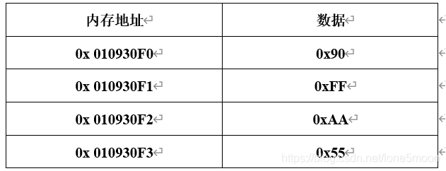
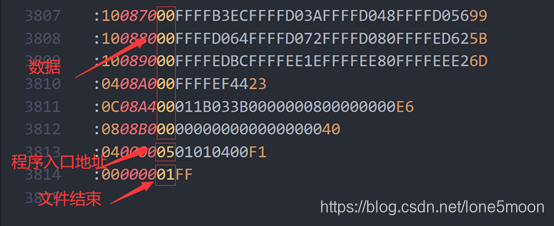

一、HEX文件格式说明
Hex文件是Intel公司提出的按地址排列的数据信息格式,数据宽度为字节,所有数据使用16进制数字表示，并且以ASCII码的形式，按行记录数据，下图为某工程代码的HEX文件局部截图：

如上图所示，HEX文件每一行均以“:”开头，表明记录的开始，“：”之后,每至少2个字符表示一组16进制数据，格式形如:BBAAAATTHHHH....HHHCC。
- BB -- 16进制，表示此行数据长度字节数，即：HH的数目
- AAAA -- 16进制，表示数据记录的地址，根据类型不同有可能是基地址、段地址或偏移地址。
- TT -- 16进制，表示记录类型。00-代表本行是数据记录、01-代表HEX文件结束、02-标识扩展段地址记录，表明后面所有数据地址需要加上段地址左移4位、03-开始段地址记录：开始段地址记录，大部分Hex中不使用该记录类型，网上关于该记录类型的描述很少，具体作用不详、04-标识扩展线性地址记录，表明后面所有数据地址+线性地址左移16位，将该地址左移16 位后作为基地址，并且表示在下一个04类型行出现之前都要使用该地址作为基地址。05-开始线性地址记录：开始线性地址记录，即:程序入口地址(程序入口地址未必是main函数地址)。
- HH...HH -- 16进制数据，字节顺序根据芯片大小端和字长决定，处理器若为大端存储，高字节在前，低字节在后（如NXP的5744P），小端存储，则低字节在前，高字节在后（如STM32）。
- CC -- 16进制，校验码，除冒号和自身以外的其他字节数据加起来模除256的余数的补码，如上图第一行，其校验码为01 + ~(02+00+00+04+01+00)= F9。具体计算过程为：（02+00+00+04+01+00）加和为0x07，模除256后，商0余0x07，0x07补码为0xF9。
二、HEX记录类型详解
记录类型：0x00，数据标识

记录类型：0x01，本行为文件结束标识

记录类型：0x02，扩展段地址标识

记录类型：0x03，起始段地址标识

记录类型：0x04，扩展线性地址标识

记录类型：0x05，起始线性地址记录标识

一旦出现段地址或者线性地址，之后所有数据都要加偏移地址，直到出现一个新的段地址或者线性地址，再重新变更偏移地址。数据物理地址为：线性地址左移16位+段地址左移4位+偏移地址。
地址计算示例：
:020000040108EA 线性偏移地址：0x0108
:0200000212FFBD 扩展段地址：0x12FF
:0401000090FFAA5502 数据地址：0x0100
- 基地址：0108左移16位，0x01080000;
- 扩展段地址：12FF左移4位，0x00012FF0;
- 数据偏移地址：0x0100;
- 实际物理地址=基地址+扩展段地址+偏移地址=0x010930F0。
因此示例所表示的4个字节数据，在大端存储的处理器内存中的表示如下表所示：

三、文件结束与程序入口地址

上图示例为某工程HEX文件的末尾内容，其中包含了三种记录类型：00、01、05，其中：
- 00代表数据记录，其后的数据一般直接存放在芯片flash中。
- 01代表HEX文件结束，其后不跟数据，仅包含校验和。
- 05代表程序入口地址，其数据域的内容在本例中为0x01010400,该地址通常为MCU的复位向量地址，该地址在编译时由工程的链接脚本决定。
本文是作者闲时业余记录，如由遗漏错误，请见谅，感谢观看文章，转载不用注明出处。